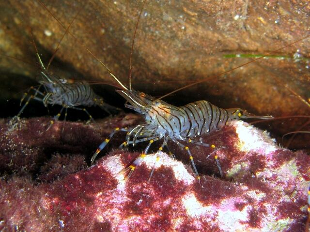

Between likeness and unlikeness
Drag the slider below one stroke at a time. Watch for the point where a scribble becomes a shrimp — and the point, later, where it stops being one again.
The drawing
Nothing marked yet.

Drag until it happens, then say so. The page has an opinion too, but it isn't showing it until you've committed to yours.
Your two boundaries, and the page's
| Boundary | You | This page |
|---|---|---|
| Became a shrimp | ||
| Went stiff |
The idea
Qi Baishi (齐白石, 1864–1957) — the village carpenter who became one of the most reproduced painters in modern China, and whose late work turned again and again to a handful of ink strokes for a shrimp — is credited with a line that has outlived most of his paintings:
太似则媚俗，不似则欺世，妙在似与不似之间。
Too much likeness panders to vulgar taste; too little deceives the
world. The marvel lies between likeness and unlikeness.
It's usually read as advice about painting. It's really a claim about where recognition itself lives. Somewhere in that slider a curved line and a dot stop being marks and become a shrimp, without any single stroke doing something different in kind from the one before it. Keep going — outlining the silhouette, drawing every leg instead of implying a cluster of them, hatching in shading — and it doesn't get more like a shrimp. It gets stiffer. The gesture that made it alive gets buried under the detail that makes it correct.
Where exactly? This page has a number for each boundary, hard-coded by whoever built it. It won't show you either one until you've marked your own, because a threshold you've been handed isn't a judgement you've made — and the page's numbers are one reading, not the answer.
The middle zone isn't a fact you can be handed, it's a judgement you make by looking, and it moves depending on what's being drawn and who's looking at it. That's why this page makes you go first.
Where else it shows up
The same curve applies wherever something stands in for something else: a caricature that's just a few exaggerated lines can be more recognisable than a careful likeness; an emoji face is three or four marks and unmistakably a face; a logo redrawn with every texture and gradient a real object has, usually reads as worse, not better, than a flat mark. Likeness and unlikeness aren't opposites with a correct amount of each — they trade off, and the interesting work is in the trade, not at either end.